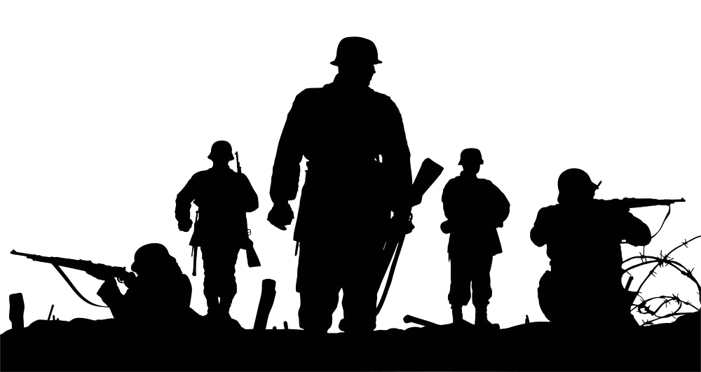

Emanuelle Peres Alcântara
"Abri meus olhos e nem pude acreditar no que via: fumaça, gritos, ruídos, estrondos, caos, guerra. Havia apenas fechado os olhos por um breve momento e, quando os abri novamente, via apenas desastres. Desastres causados por nós, seres humanos, por nossa forma ignorante de ser, ver e solucionar os problemas no qual nós mesmos nos colocamos; por nossa fome imprescindível de poder, dinheiro e prestígio.
Observando ao meu redor, recordei do que havia dito a minha família no momento em que parti:"Posso estar indo para a guerra por obrigação, sem treinamento, sem nenhuma experiência, por causa das injustiças que hoje rondam pelo mundo, mas tentarei salvar e dar auxílio até a última vida inocente que encontrar e sempre lembrar-me dos princípios que a mim foram passados, até meu último suspiro. Eu prometo ".
Sai dos meus devaneios, com o general me chamando:
- Soldado, você se machucou, está bem?
Antes de conseguir lhe responder ouvi mais um estrondo, seguido por gritaria, choro e pânico. Vi pessoas correndo em busca de refúgio e, como era meu instinto, tentei levantar e ir ajudar, mas fui atingido por um pedaço de metal; ele me acertara nas duas pernas, fazendo com que não conseguisse mexer. Tentei me levantar mais uma, duas, três vezes, nada. Imediatamente pensei na quantidade de pessoas que estariam na mesma situação, inaptos, sem forças para seguir e percebi que não podia desistir, então comecei a gritar:
- SOCORRO! Alguém me ajuda! Aqui!
Enquanto tentava ao máximo conseguir força para me soltar do pedaço de aço e levantar, olhei de relance para o céu e vi uma quantidade inexplicável de mísseis se aproximando. Cheguei à conclusão de que era o fim. O fim de minha vida, o fim da vida de milhares de pessoas, o fim de uma nação.
Por um breve momento, me desliguei de tudo, concentrei apenas nas batidas do meu coração e sorri. Sorri porque eu sabia que tinha feito a diferença no mundo, que havia sido feliz, que havia tentado, durante todo o tempo, a cada segundo, havia tentado cumprir minha promessa e ajudado a salvar milhares de vidas, que havia tentando até o seu último suspiro."
